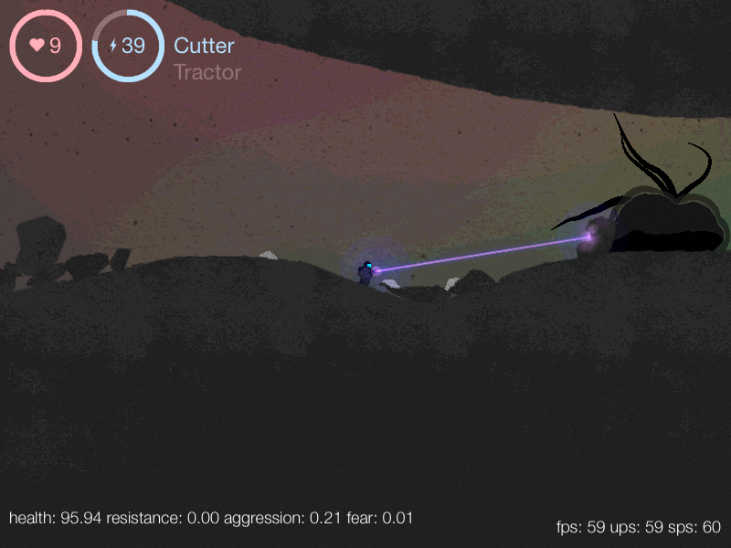
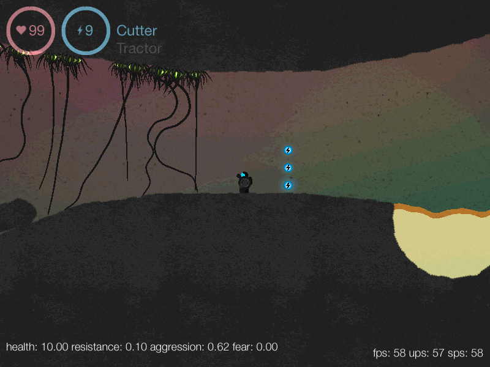
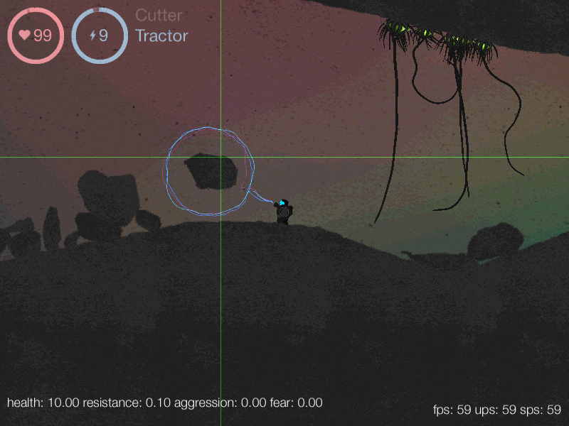

Surfacer
A 2d side-scrolling physics-based game which I never finished. It no longer even compiles, because it depends on pre-C++0x11 tr1 libraries. I plan on attacking it and getting it running again, because it's too neat to let succomb to bitrot.
Features
- Destructible terrain, where cut-off geometry is dynamic, and part of gameplay
- Soft-body monsters! Grubs! Jellies! Worms! Grippy tentacles! Gross stuff!
- Fluids
- Quaint fullscreen shader effects
- SVG-based geometry representation of monsters, game items, and player, allowing me to design them in Illustrator


